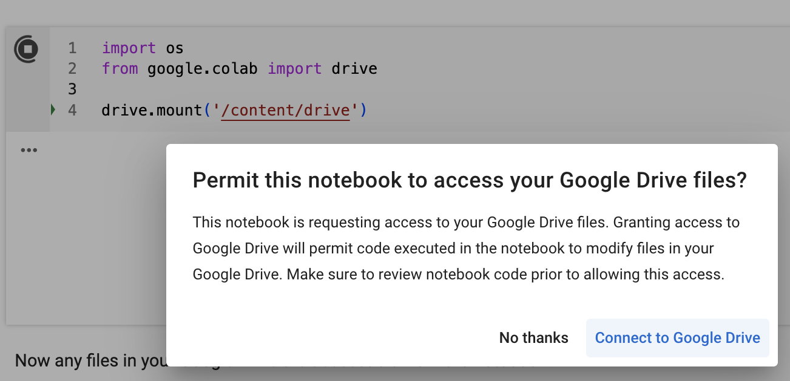
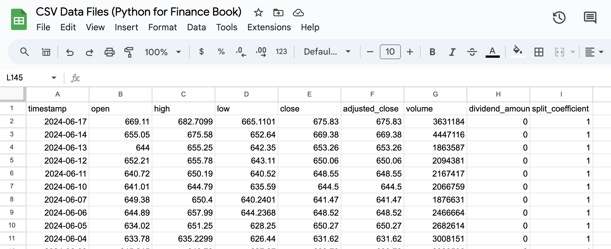

import os
from google.colab import drive
drive.mount('/content/drive')Mounted at /content/driveOne benefit of Google Colab notebooks, over generic Jupyter notebooks, is the ability to easily integrate with other Google products and services.
These integrations take advantage of the fact that in order to access a Colab notebook, you first need to be logged in with your Google Account. They then use credentials of the logged in user to access Google products and services on your behalf.
A Google Drive integration will allow us to read and write files from Google Drive.
We will first need to “mount” the Google Drive to the Colab filesystem, so we can access Drive files within Colab. When we mount the drive, we choose the name of a local subdirectory within the Colab filesystem (for example, “content/drive”) in which we would like to access the files:

Now any files in your Google Drive are accessible from the notebook.
For example, accessing a file called “daily-prices-nflx.csv” stored in the top level of the user’s Google Drive:
True| timestamp | open | high | low | close | adjusted_close | volume | dividend_amount | split_coefficient | |
|---|---|---|---|---|---|---|---|---|---|
| 0 | 2024-06-17 | 669.11 | 682.7099 | 665.1101 | 675.83 | 675.83 | 3631184 | 0.0 | 1.0 |
| 1 | 2024-06-14 | 655.05 | 675.5800 | 652.6400 | 669.38 | 669.38 | 4447116 | 0.0 | 1.0 |
| 2 | 2024-06-13 | 644.00 | 655.2500 | 642.3500 | 653.26 | 653.26 | 1863587 | 0.0 | 1.0 |
| 3 | 2024-06-12 | 652.21 | 655.7800 | 643.1100 | 650.06 | 650.06 | 2094381 | 0.0 | 1.0 |
| 4 | 2024-06-11 | 640.72 | 650.1900 | 640.5200 | 648.55 | 648.55 | 2167417 | 0.0 | 1.0 |
For a spreadsheet datastore integration, we can interface with Google Sheets directly.
We first need to create a Google Sheets document, for instance this example document.

Before proceeding, we observe the identifier of the Google Sheets document from the URL:
After noting the document identifier, we can use some boilerplate code to authenticate and access the document.
Authorizing Google Colab to authenticate on behalf of the currently logged in user (assuming that user has access to the spreadsheet document you created):
Using credentials from the logged in user:
Interfacing with Google Sheets, using the gspread package:
Accessing the document:
DOC: CSV Data Files (Python for Finance Book) - PUBLICListing worksheets in the document:
Accessing a specific sheet:
Reading data from a sheet:
[{'timestamp': '2024-06-17', 'open': 669.11, 'high': 682.7099, 'low': 665.1101, 'close': 675.83, 'adjusted_close': 675.83, 'volume': 3631184, 'dividend_amount': 0, 'split_coefficient': 1}, {'timestamp': '2024-06-14', 'open': 655.05, 'high': 675.58, 'low': 652.64, 'close': 669.38, 'adjusted_close': 669.38, 'volume': 4447116, 'dividend_amount': 0, 'split_coefficient': 1}, {'timestamp': '2024-06-13', 'open': 644, 'high': 655.25, 'low': 642.35, 'close': 653.26, 'adjusted_close': 653.26, 'volume': 1863587, 'dividend_amount': 0, 'split_coefficient': 1}, {'timestamp': '2024-06-12', 'open': 652.21, 'high': 655.78, 'low': 643.11, 'close': 650.06, 'adjusted_close': 650.06, 'volume': 2094381, 'dividend_amount': 0, 'split_coefficient': 1}, {'timestamp': '2024-06-11', 'open': 640.72, 'high': 650.19, 'low': 640.52, 'close': 648.55, 'adjusted_close': 648.55, 'volume': 2167417, 'dividend_amount': 0, 'split_coefficient': 1}]| timestamp | open | high | low | close | adjusted_close | volume | dividend_amount | split_coefficient | |
|---|---|---|---|---|---|---|---|---|---|
| 0 | 2024-06-17 | 669.11 | 682.7099 | 665.1101 | 675.83 | 675.83 | 3631184 | 0 | 1.0 |
| 1 | 2024-06-14 | 655.05 | 675.5800 | 652.6400 | 669.38 | 669.38 | 4447116 | 0 | 1.0 |
| 2 | 2024-06-13 | 644.00 | 655.2500 | 642.3500 | 653.26 | 653.26 | 1863587 | 0 | 1.0 |
| 3 | 2024-06-12 | 652.21 | 655.7800 | 643.1100 | 650.06 | 650.06 | 2094381 | 0 | 1.0 |
| 4 | 2024-06-11 | 640.72 | 650.1900 | 640.5200 | 648.55 | 648.55 | 2167417 | 0 | 1.0 |